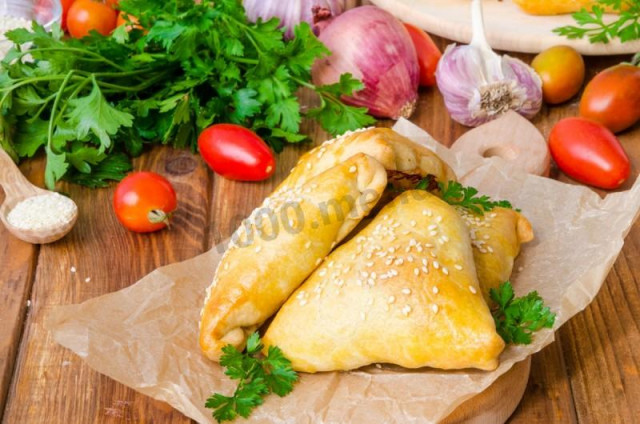

Самса с курицей из слоеного теста.
| Ингредиенты для теста: | Ингредиенты для начинки: |
|---|
- Сливочное масло: 100 гр.
- Пшеничная мука: 250 гр.
- Вода леденая: 90 мл.
- Соль: 0,5 чайн. л.
- Яйцо: 1 шт.
- Кунжут: 2 стол. л.
|
- Куриные окорочка (или куриные бедра 4 шт.): 2 шт.
- Лук: 2 шт.
- Соль: по вкусу
- Чеснок (по желанию): 2 шт.
- Петрушка: по вкусу
- Перец острый молотый: по вкусу
|
Оборудование: миска среднего размера, большая терка, холодильник, целлофановый пакет, нож, ложка столовая, скалка, духовка и пергамент.
